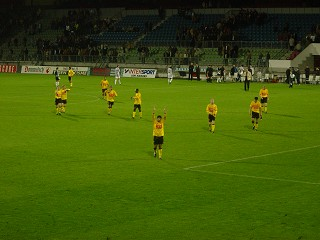

|
Willem II - Roda JC (0-2) 4 oktober 2003 |
Twee Charlton Athletic supporters gingen mee
naar Tilburg.
De Willem II-sjalen in de lucht.

Er waren 150 Rodasupporters.
Het prachtige spandoek van de NSC
Een minuut stilte voor de onlangs overleden
burgemeester van Tilburg, Johan Stekelenburg.
Het Roda-vak zorgde voor de sfeer. Het publiek
van Willem II was doods.
Nadat Bart van den Eede een treffer afgekeurd
zag door arbiter Sterk, was het Edrissa Sonko
die in de 36e min. 0-1 scoorde.
Doublefun voor onze Engelse gasten die eerder
op de middag een 1-2 van CA op Portsmouth
mochten bejubelen.
De Nieuw-Zeeland vlag inspireerde Vloet om
Ivan te brengen voor Addo. Daarvoor werd Sonko
reeds vervangen door Berglund.
Filipovic raakte ernstig geblesseerd en werd
waardig vervangen door Lachambre.
De Tilburgers rechts van ons gastenvak.
Willem II kreeg behoorlijk veel kansen en de
druk op het Roda-doel was bij vlagen enorm.
In de 88e min. scoort Kone de bevrijdende 0-2.

3 kostbare punten zijn gewonnen waardoor
Roda naar een zevende plaats klimt.
© Koempels
Pleasure Dome